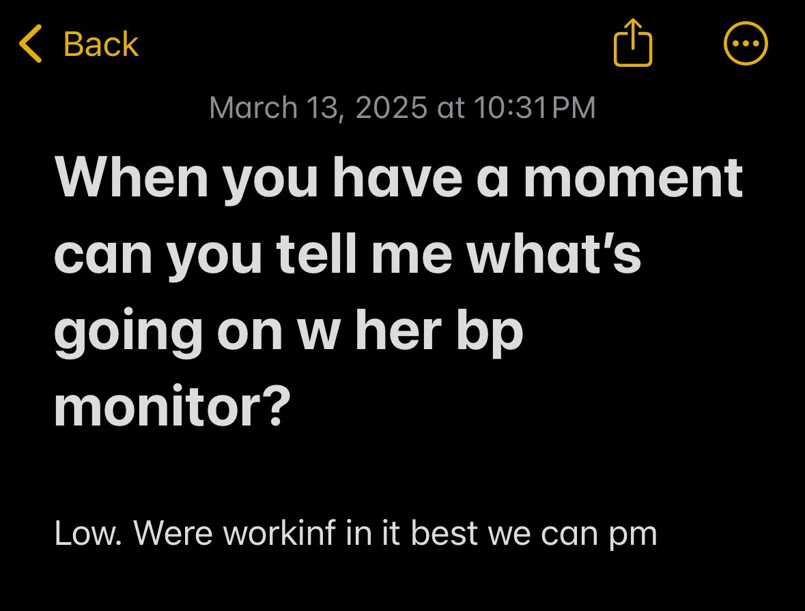
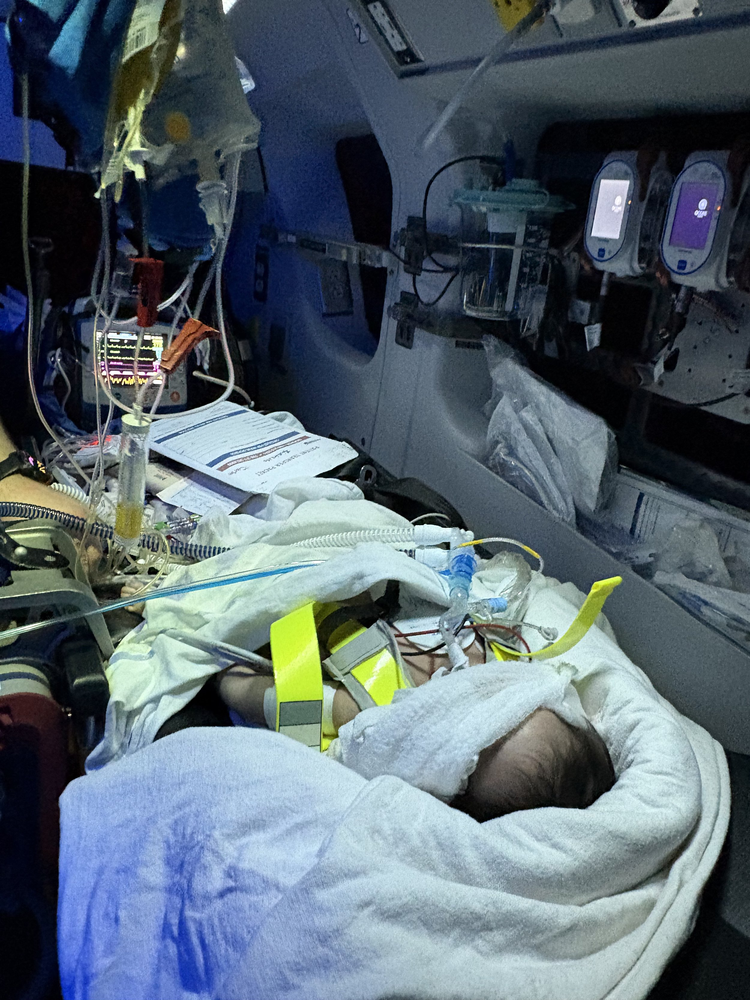

Author: Yih-Chun
This is part 4 of what I expect to be a 5-part series from the car accident until Cece was (I believe) pronounced dead. Part 1 covers from my home to the Carle ER. Part 2 covers until she gets wheeled up to Carle's Pediatric ICU. Part 3 ends with us on Carle's helipad.

The pre-flight briefing was that our flight would be an hour and 13 minutes. I checked my phone as we lifted off the helipad: 9:45pm. That would put us in St. Louis by 11pm. "Cece, stick with us through this flight— we're getting you help," I thought. Up we went through the night sky, giving a unique view of the familiar Urbana skyline. We crossed east of the stadium, directly over the airport, and into the dark fields surrounding our town.

Twenty minutes into the flight, Cece was regularly losing blood pressure measurements on the monitor— her blood pressure was too low for their sensors to pick up. Heart rate monitor shot up to 300 (the flight nurse later mentioned during the handoff that the pulse was actually 150 but the monitor was picking up T-waves as a separate beat). They later told me that they had her on maximum doses of epinephrine, norepinephrine, and vasopressin. I was afraid she wasn't going to make it to St. Louis. The flight nurse and I communicated by typing on my iPhone because it was too loud and my headset doesn't have a microphone (or speakers).
On the way, I was praying and felt a distinct impression that she wasn't going to make it— perhaps this was God's way to prepare me. I started to cry. I also started to work on my heart: how must I live going forward. The first thing I thought of was my relationship with Evelyn. Even if the accident were her fault (I didn't hear anyone's account of what happened yet), I could never blame her, or otherwise suggest that it was her actions that led to Cece's death. Next, I turned to the other driver. Even if it were the other driver's fault, I preemptively forgave him/her. I haven't always driven perfectly— how was I any better than the other driver. Christ's forgiveness must cover him or her as well. Finally: when would we pull the plug on Cece. I needed to come up with my answer, then work with Evelyn as things unfolded. Eventually I came to my position: I want Cece to be able to live a normal life from the neck up.
I also had this gripping fear that this choice to live in the middle of the cornfields far from big-city medical centers was going to hurt Cece's chances of survival. It would be 5 hours from the time of the accident until we landed on the helipad— how much damage would her body have taken during this time? Could the doctors have treated her better if she had been in a bigger medical center? Dr. Rosado-Barreras had told me that Cece's intracranial pressure was already quite high, but that we usually see ICP peak around 24-48 hours after the accident. Was her ICP rising? Would this result in further brain damage?
Finally, after waiting what felt like forever, I started to see some urban housing pass underneath us. Once we reached Forest Park, I could see St. Louis Children's Hospital. As we approached the helipad, I thought to Cece "we're here, they'll be able to take good care of you here."

After we arrived, they had the ER room ready for us with all the doctors there. The nurse running the trauma room didn't get the handoff clearly so I went to get the AirLife RN to repeat the dosage information to the nurse running the ER. Attendings, Fellows, Residents, crowded the room as they worked to get her stabilized enough to send her off for a CT Scan. While there, I called Evelyn with the question no parent wants to confront— at what point do we let Cece go. I was ready with my answer, but wanted to hear hers first. Evelyn wasn't ready to talk about it. She felt that they would try for a few days at least.